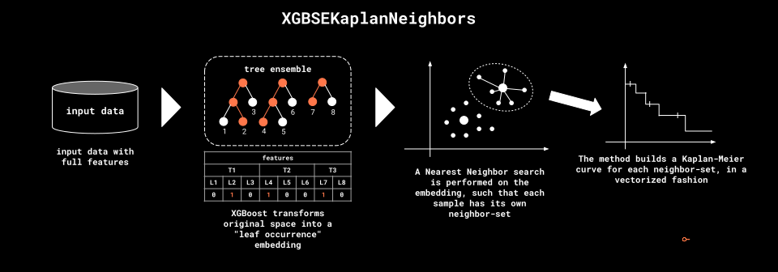
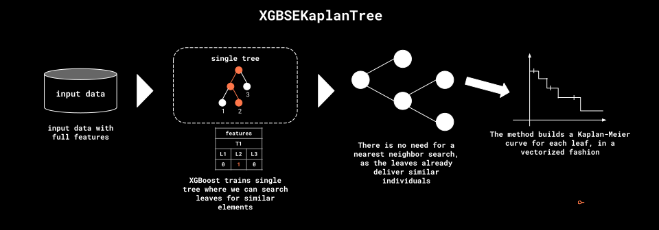
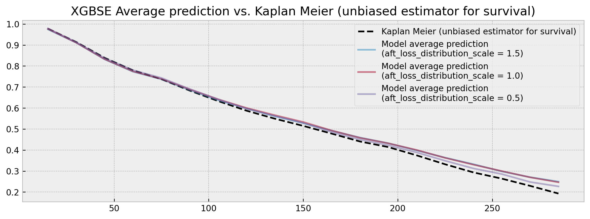

How XGBSE works
How xgbse works¶
In this section, we try to make a quick introduction to xgbse. Refer to this this Notebook for the full code and/or if you want a more practical introduction.
What xgbse tries to solve¶
The XGBoost implementation provides two methods for survival analysis: Cox and Accelerated Failure Time (AFT). When it comes to ordering individuals by risk, both show competitive performance (as measured by C-index) while being lightning fast.
However, we can observe shortcomings when it comes to other desirable statistical properties. Specifically, three properties are of concern:
- prediction of survival curves rather than point estimates
- estimation of confidence intervals
- calibrated (unbiased) expected survival times
Let us take the AFT implementation as an example. The model assumes an underlying distribution for times and events, controlled by the aft_loss_distribution and aft_loss_distribution_scale hyperparameters. By tweaking the aft_loss_distribution_scale hyperparameter we can build models with very different average predicted survival times, while maintaing ordering, with good C-index results:
# loop to show different scale results
for scale in [1.5, 1.0, 0.5]:
# chaning parameter
PARAMS_XGB_AFT['aft_loss_distribution_scale'] = scale
# training model
bst = xgb.train(
PARAMS_XGB_AFT,
dtrain,
num_boost_round=1000,
early_stopping_rounds=10,
evals=[(dval, 'val')],
verbose_eval=0
)
# predicting and evaluating
preds = bst.predict(dval)
cind = concordance_index_censored(y_valid['c1'], y_valid['c2'], 1-preds)
print(f"aft_loss_distribution_scale: {scale}")
print(f"C-index: {cind[0]:.3f}")
print(f"Average survival time: {preds.mean():.0f} days")
print("----")
aft_loss_distribution_scale: 1.5
C-index: 0.645
Average survival time: 203 days
----
aft_loss_distribution_scale: 1.0
C-index: 0.648
Average survival time: 165 days
----
aft_loss_distribution_scale: 0.5
C-index: 0.646
Average survival time: 125 days
----
If we plot the average predictions alongside a unbiased survival estimator such as the Kaplan Meier we can check that for each step of 0.5 in aft_loss_distribution_scale we move roughly one decile to the right in the curve.

So what predictions should we trust? Such sensitivity to hyperparameters (0.003 C-index variation yet 78 days difference) raises red flags for applications that are dependent on robust and calibrated time-to-event estimates, mining trust and preventing shipping survival analysis models to production.
Leveraging xgboost as a feature transformer¶
Although in need of an extension for statistical rigor, xgboost is still a powerhouse. C-index results show that the model can capture a great deal of signal, being competitive with the state of the art. We just need to adapt how we use it.
Besides being leveraged for prediction tasks, Gradient Boosted Trees (GBTs) can also be used as feature transformers of the input data. Trees in the ensemble perform splits on features that discriminate the target, encoding the most relevant information for the task at hand in their structure. In particular, the terminal nodes (leaves) at each tree in the ensemble define a sparse supervised feature transformation (embedding) of the input data.
This kind of tree ensemble embedding has very convenient properties:
-
sparsity and high-dimensionality: trees deal with nonlinearity and cast original features to a sparse, high-dimensional embedding, which helps linear models perform well when trained on it. This allows a Logistic Regression trained on the embedding (as one-hot encoded leaf indices) to have comparable performance to the actual ensemble, with the added benefit of probability calibration (see [1], [2], and [3])
-
supervision: trees also work as a noise filter, performing splits only through features that have predictive power. Thus, the embedding actually has a lower intrinsic dimension than the input data. This mitigates the curse of dimensionality and allows a K-Nearest Neighbor model trained on the embedding (using hamming distance) to have comparable performance to the actual ensemble, with the added flexibility to apply any function over the neighbor-sets to get predictions. This arbitrary function can be, for instance, an unbiased survival estimator such as the Kaplan-Meier estimator (see [4])
We take advantage of these properties in different ways as we will show in the next subsections.
XGBSEDebiasedBCE: logistic regressions, time windows, embedding as input¶
Our first approach, XGBSEDebiasedBCE, takes inspiration from the multi-task logistic regression method in [5], the BCE approach in [6], and the probability calibration ideas from [1], [2] and [3].
It consists of training a set of logistic regressions on top of the embedding produced by xgboost, each predicting survival at different user-defined discrete time windows. The classifiers remove individuals as they are censored, with targets that are indicators of surviving at each window.

The naive approach tends to give biased survival curves, due to the removal of censored individuals. Thus, we made some adaptations such that logistic regressions estimate the di/ni term (point probabilities) in the Kaplan-Meier formula and then use the KM estimator to get nearly unbiased survival curves.
This way, we can get full survival curves from xgboost, and confidence intervals with minor adaptations (such as performing some rounds of bootstrap).
Training and scoring of logistic regression models is efficient, being performed in parallel through joblib, so the model can scale to hundreds of thousands or millions of samples.
XGBSEKaplanNeighbors: Kaplan-Meier on nearest neighbors¶
As explained in the previous section, even though the embedding produced by xgboost is sparse and high dimensional, its intrisic dimensionality actually should be lower than the input data. This enables us to "convert" xgboost into a nearest neighbor model, where we use hamming distance to define similar elements as the ones that co-occurred the most at the ensemble terminal nodes. Then, at each neighbor-set we can get survival estimates with robust methods such as the Kaplan-Meier estimator.

We recommend using dart as the booster to prevent any tree to dominate variance in the ensemble and break the leaf co-ocurrence similarity logic. We built a high-performing implementation of the KM estimator to calculate several survival curves in a vectorized fashion, including upper and lower confidence intervals based on the Exponential Greenwood formula.
However, this method can be very expensive at scales of hundreds of thousands of samples, due to the nearest neighbor search, both on training (construction of search index) and scoring (actual search).
XGBSEKaplanTree: single tree, and Kaplan-Meier on its leaves¶
As a simplification to XGBSEKaplanNeighbors, we also provide a single tree implementation. Instead of doing expensive nearest neighbor searches, we fit a single tree via xgboost and calculate KM curves at each of its leaves.

It is by far the most efficient implementation, able to scale to millions of examples easily. At fit time, the tree is built and all KM curves are pre-calculated, so that at scoring time a simple query will suffice to get the model's estimates.
However, as we're fitting a single tree, predictive power may be worse. That could be a sensible tradeoff, but we also provide XGBSEBootstrapEstimator, a bootstrap abstraction where we can fit a forest of XGBSEKaplanTree's to improve accuracy and reduce variance.
Does it solve the problem?¶
Now we return to the first example and check how XGBEmbedKaplanNeighbors performs:
# loop to show different scale results
for scale in [1.5, 1.0, 0.5]:
# chaning parameter
PARAMS_XGB_AFT['aft_loss_distribution_scale'] = scale
# training model
xgbse_model = XGBSEKaplanNeighbors(PARAMS_XGB_AFT, n_neighbors=30)
xgbse_model.fit(
X_train, y_train,
validation_data = (X_valid, y_valid),
early_stopping_rounds=10,
time_bins=TIME_BINS
)
# predicting and evaluating
preds = xgbse_model.predict(X_valid)
cind = concordance_index_censored(y_valid['c1'], y_valid['c2'], (1-preds).mean(axis=1))
avg_probs = preds[[30, 90, 150]].mean().values.round(4).tolist()
print(f"aft_loss_distribution_scale: {scale}")
print(f"C-index: {cind[0]:.3f}")
print(f"Average probability of survival at [30, 90, 150] days: {avg_probs}")
print("----")
aft_loss_distribution_scale: 1.5
C-index: 0.640
Average probability of survival at [30, 90, 150] days: [0.9109, 0.6854, 0.528]
----
aft_loss_distribution_scale: 1.0
C-index: 0.644
Average probability of survival at [30, 90, 150] days: [0.9111, 0.6889, 0.5333]
----
aft_loss_distribution_scale: 0.5
C-index: 0.650
Average probability of survival at [30, 90, 150] days: [0.913, 0.6904, 0.5289]
----
As measured by the average probability of survival in 30, 90 and 150 days the model is very stable, showing similar calibration results independently of aft_loss_distribution_scale choice, with comparable (or a bit worse) C-index results. Visually, the comparison of the average model predictions to a Kaplan Meier yields much better results:

No more point estimates and high variation! Although is too harsh to claim that the problem is solved, we believe that the package can be a good, more statistically robust alternative to survival analysis.